WHO WE ARE
Corner Taco started in 2011 as a tiny 100 square foot taco stand inside of an Oceanfront Bar in Jacksonville, Florida. We had a wood burning grill that was fueled by local Pecan wood and made fresh tortillas daily. In 2012, we became one of the first food trucks in the South, serving Mexclectic tacos from a 1965 Airstream. We developed a cult like following with lines that were sometimes 100 yards long. Corner Taco was apart of the emerging gourmet food truck movement that now exists in Jacksonville (currently around 150 mobile vendors).
Join our E-club for 10% off your next order!
Photos
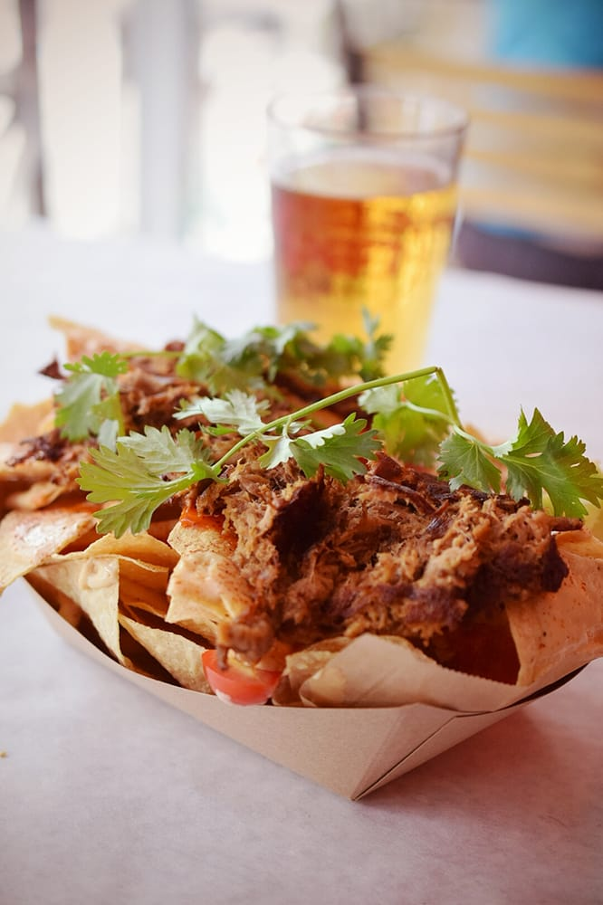
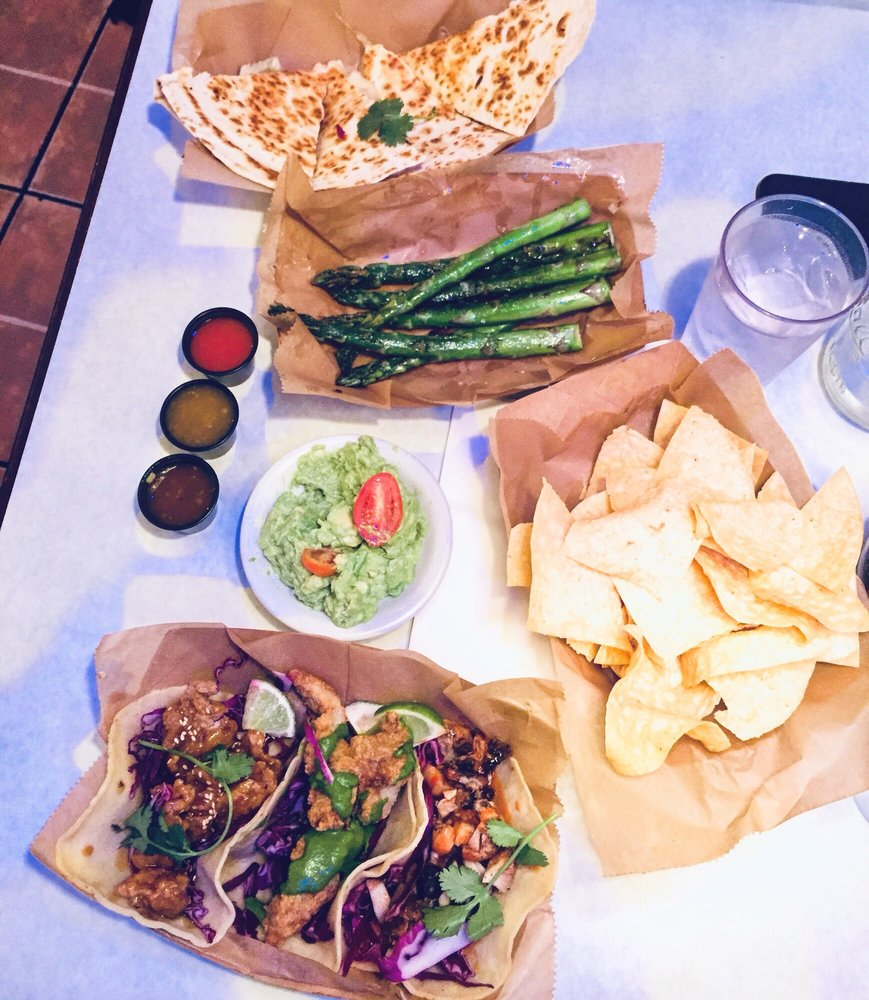
 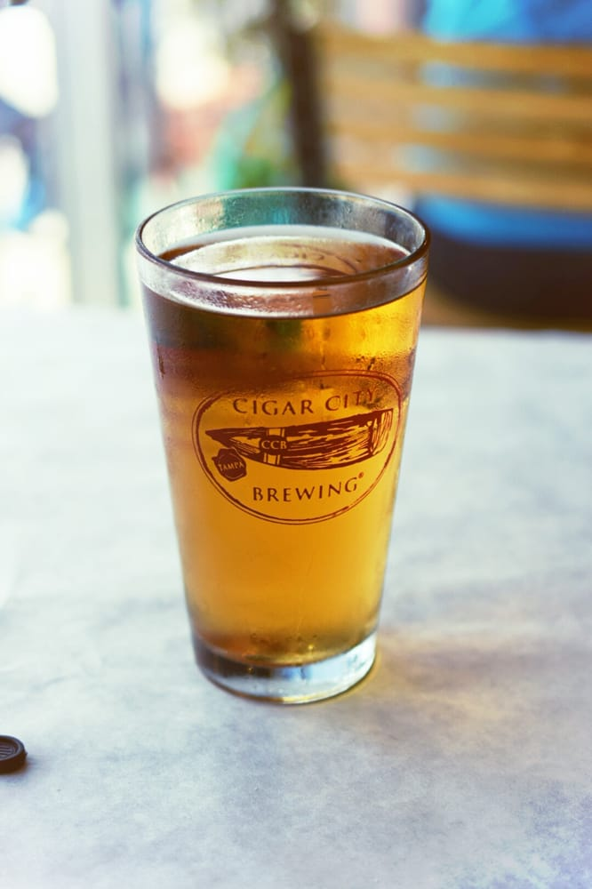
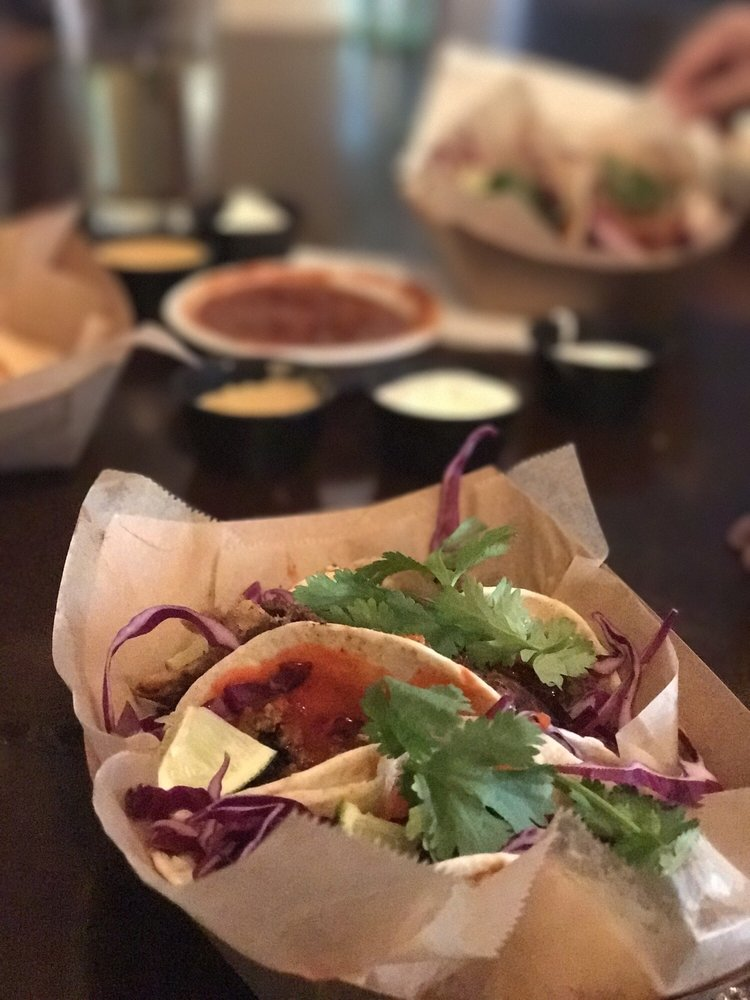
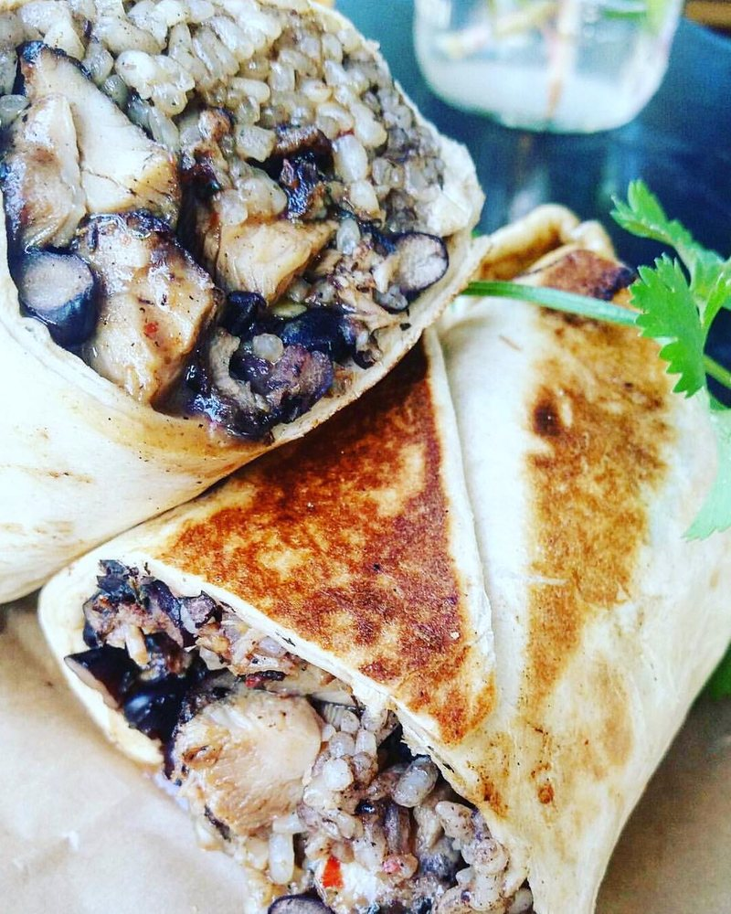
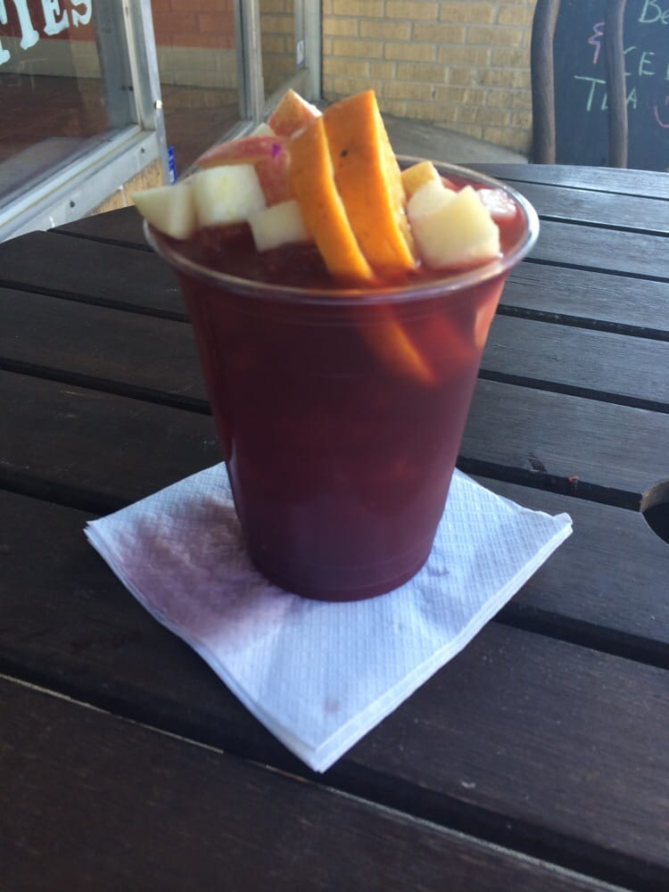
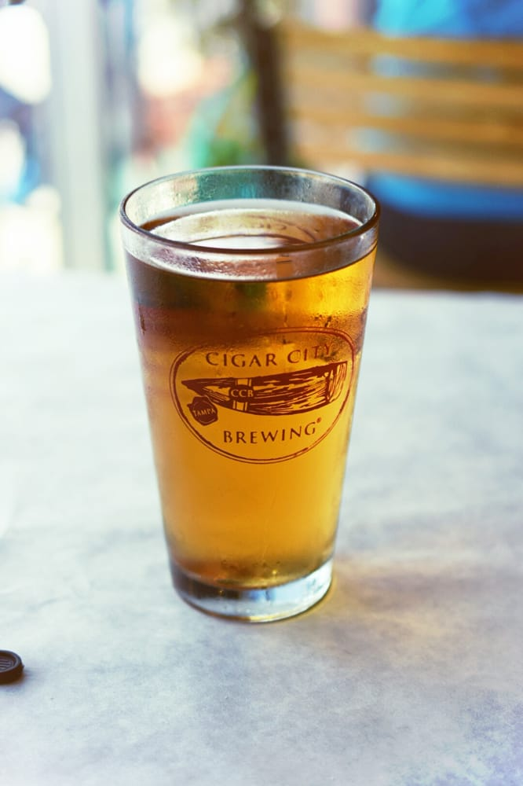
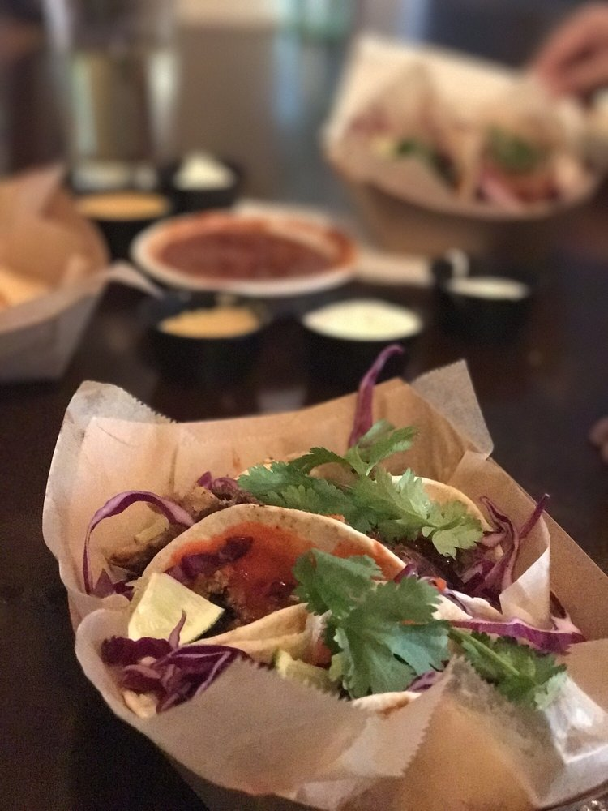
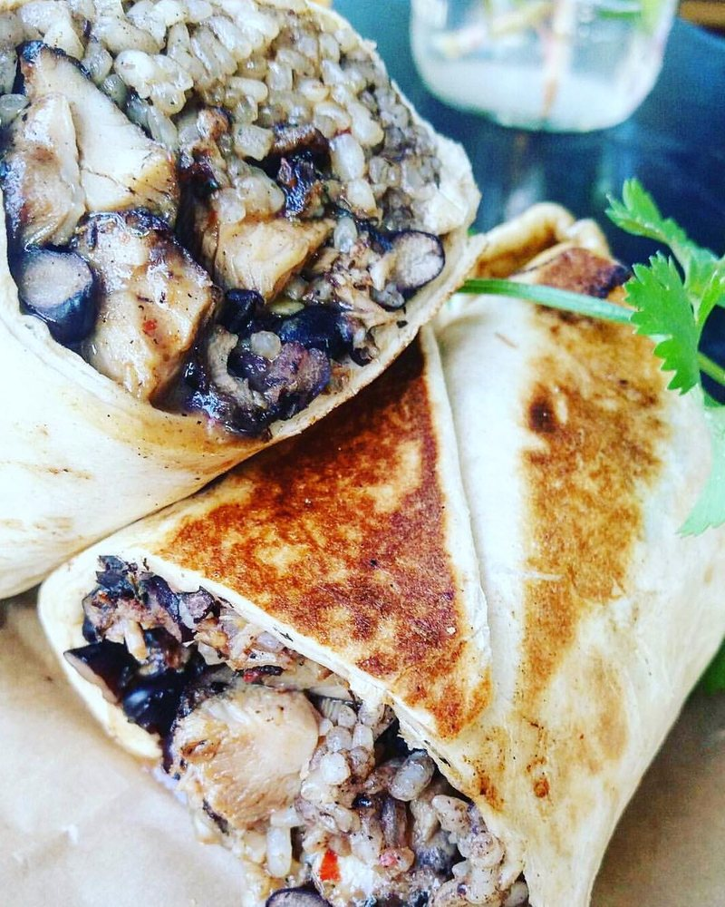
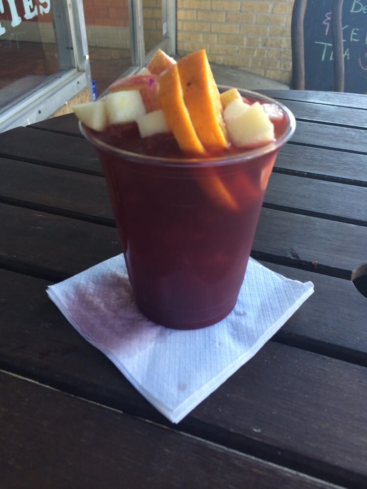
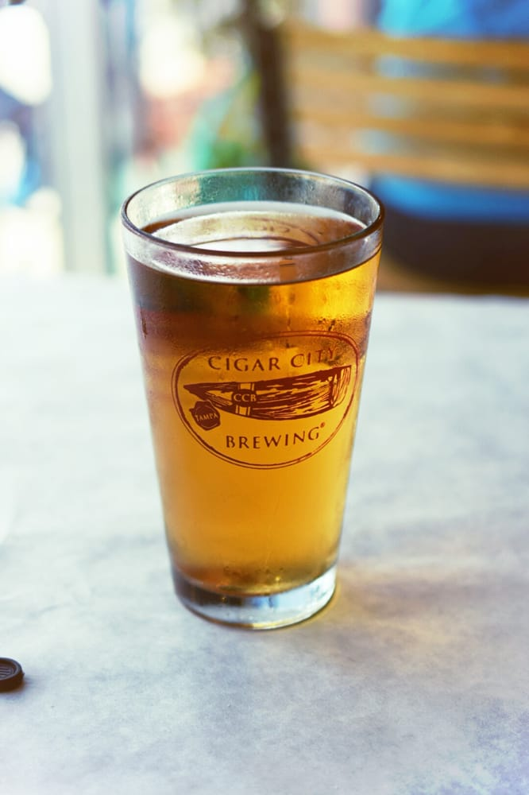
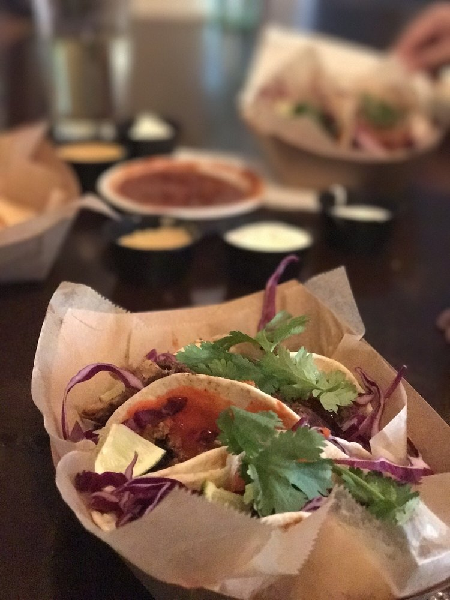
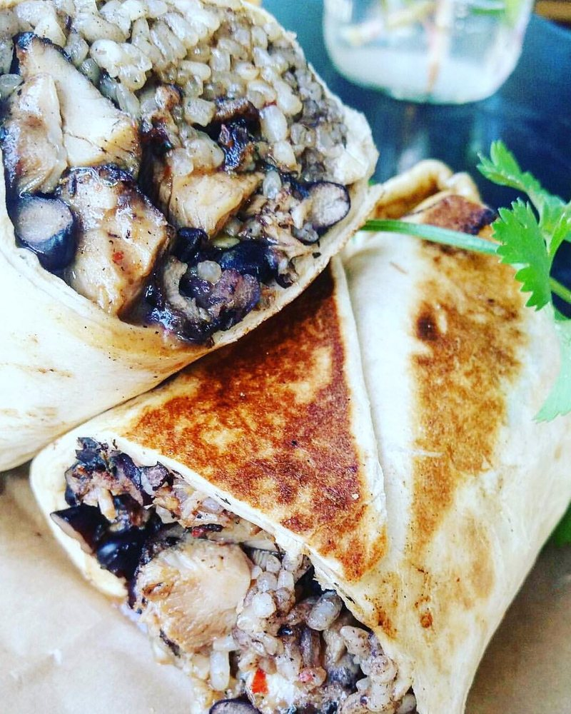
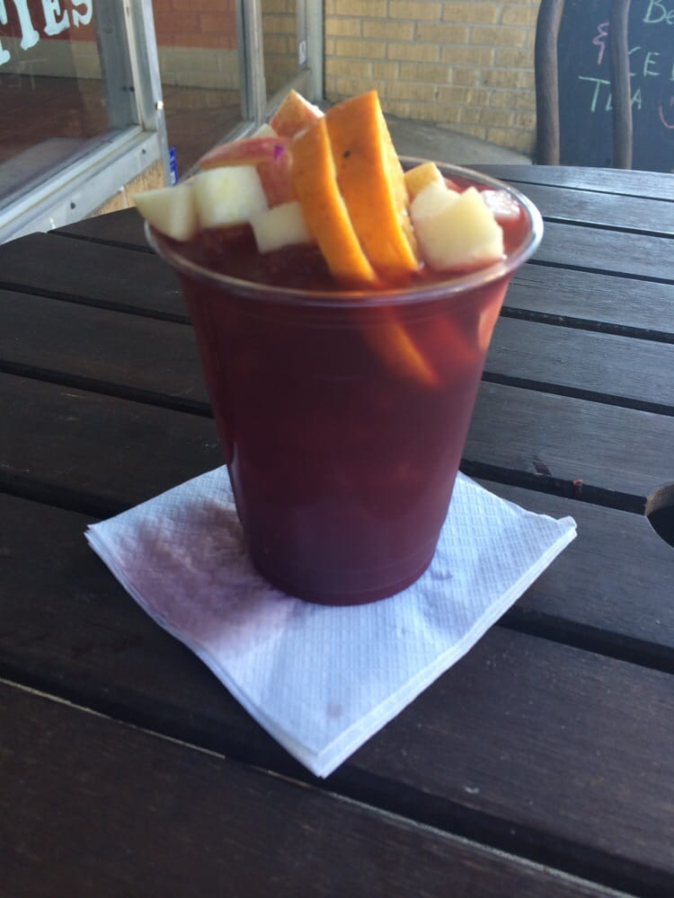
Come check us out!
HOURS
Mon-Fri: 11-9
Sat-Sun: 12-10
818 Post Street
Jacksonville,FL 32204
904-240-0412